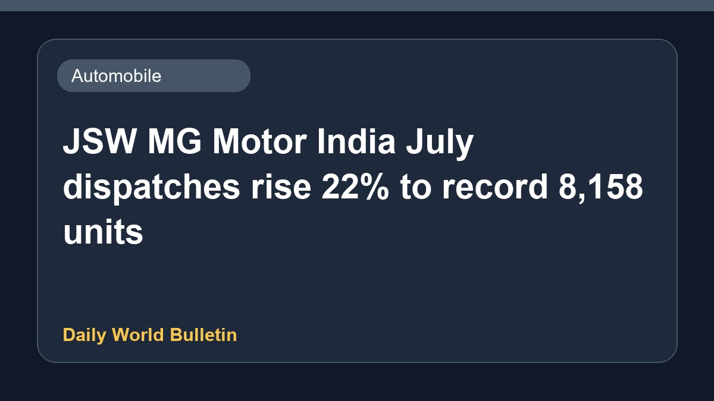

JSW MG Motor India July dispatches rise 22% to record 8,158 units

JSW MG Motor India has reported a 22 percent increase in its wholesale dispatches for the month of July, reaching a record total of 8,158 units. This growth highlights the rising demand for the company's vehicle lineup in the domestic market. Business Standard provided these figures, reflecting positive momentum for the automaker during the period. Further details regarding specific model-wise sales performance and future growth projections were limited in the available reports.
Original source: Automobile News Sources
JSW MG Motor India's July dispatches rise 22% to record 8,158 units - Business Standard ↗
JSW MG Motor India's July dispatches rise 22% to record 8,158 units - Business Standard ↗